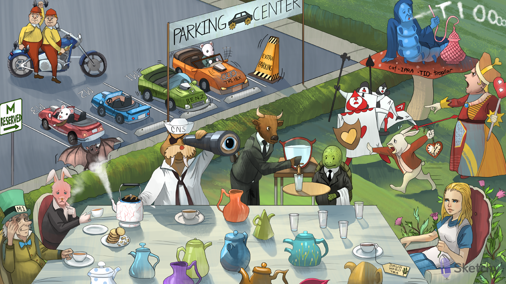

Motorcycle parking spots: muscarinic acetylcholine receptors (M1, M2, M3)
Reversing into motorcycle parking spot: muscarinic antagonists reversibly block muscarinic receptors
Blocked tweedleDUMBBELS: antimuscarinics block the muscarinic effects of diarrhea, urination, miosis, bronchospasm, bradycardia, lacrimation, salivation
Blocked acetyl-cola bottle: antimuscarinics block the action of acetylcholine at M receptors
Alice: atropine (antimuscarinic)
Belladonna flower - a natural antimuscarinic alkaloid
Jimson weed - a natural antimuscarinic alkaloid
Large pupil gazing into the distance: antimuscarinics cause pupillary dilation (mydriasis) and cycloplegia (inability to accommodate the lens for near vision)
TeleSCOPE: scopolamine (antimuscarinic)
Seasick sailor outfit: scopolamine is used to treat motion sickness (vestibular nausea)
Eyepatch: scopolamine transdermal patch is used to treat motion sickness
CNS hat: antimuscarinics (e.g. scopolamine) cross the blood-brain barrier and inhibits central M1 receptors
Heart with jewel nodes: antimuscarinics block parasympathetic activation of M2 receptors on the SA and AV nodes (increased heart rate, increased AV conduction)
Elevated heart watch: antimuscarinics (e.g. atropine) increase heart rate (useful in the treatment of bradycardia)
Heart shield: heart block (atrioventricular block)
Falling heart shields: antimuscarinics (e.g. atropine) increase AV conduction (useful in the treatment of heart block)
Cat-ipra-tio-tropillar: ipratropium and tiotropium (M3 muscarinic antagonists)
Puffing: ipratropium and tiotropium are inhaled antimuscarinic bronchodilators
Blue bloater with pink puffer: ipratropium and tiotropium are useful in the management of COPD (antagonize M3 receptors → bronchodilation, decreased secretions)
Long lasting TIO smoke rings: tiotropium dissociates more slowly from the M3 receptor (longer bronchodilator action)
Ox butler: oxybutynin (M3 muscarinic antagonist)
Turning off bladder: oxybutynin and tolterodine treat incontinence (antagonize M3 receptors → relax smooth muscle in ureters and bladder wall)
Turtle butler: tolterodine (M3 muscarinic antagonist)
CENTER over M1: M1 muscarinic receptors are found in the CNS
PARKING over M1: M1 receptor antagonists can reduce tremors and rigidity in Parkinson’s disease
Benz parked in M1: benztropine (centrally acting M1 muscarinic antagonist)
Tri-hex car parked in M1: trihexyphenidyl (centrally acting M1 muscarinic antagonist)
Shaking antenna: centrally acting antimuscarinics (e.g. benztropine, trihexyphenidyl) treat tremor and rigidity in Parkinson’s (block excess cholinergic activity)
Cogwheel: excessive M1 activation is associated with cogwheel rigidity in Parkinson’s disease
Falling “extra parking” cone: antimuscarinics treat extrapyramidal side effects caused by antipsychotics: e.g. dystonia, akathisia, parkinsonism (re-establish dopaminergic- cholinergic balance)
Hot as a hare: antimuscarinics inhibit M3 receptors on sweat glands → decreased sweating → hyperthermia
Dry as a cracker: antimuscarinics decrease salivation and lacrimation → dry mouth and eyes
Blind as a bat: antimuscarinics cause mydriasis and cycloplegia→ blurred vision
High-pressure as a kettle: antimuscarinics cause mydriasis → decreased outflow of aqueous humor → acute angle closure glaucoma
Mad as a hatter: antimuscarinics cross the BBB and antagonize central M1 receptors → sedation, agitation, hallucination, coma (especially in elderly patients)